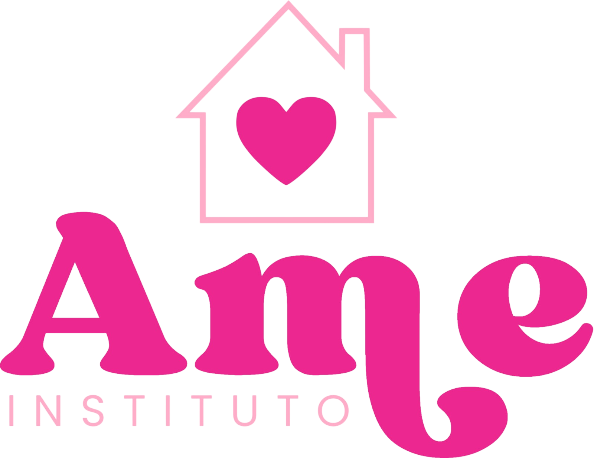

Missão
Promover cultura, educação, cidadania e sustentabilidade por meio de projetos inclusivos e articulados que transformem realidades e valorizem os saberes locais.

Conectando cultura, educação e comunidade para transformar realidades em São Luís e além.
Visualizar EventosFundado em 19 de setembro de 2010, em São Luís (MA), o Instituto AME é uma associação privada dedicada a transformar realidades por meio da cultura, da arte e da cidadania. Acreditamos que a educação, a valorização cultural e a participação comunitária são os caminhos mais sólidos para abrir oportunidades, preservar saberes locais e construir uma sociedade mais justa e inclusiva.
Atuamos como uma ponte entre pessoas, comunidades, poder público, organizações do terceiro setor e iniciativa privada. Desenvolvemos e apoiamos projetos integrados que respondem às reais necessidades dos territórios onde atuamos.
Promover cultura, educação, cidadania e sustentabilidade por meio de projetos inclusivos e articulados que transformem realidades e valorizem os saberes locais.
Ser referência no Maranhão pelo desenvolvimento de iniciativas socioculturais participativas, éticas e de real impacto comunitário.

Termo de Fomento nº 902/2026 – SECMA

Termo de Fomento nº 902/2026 – SECMA

Termo de Fomento nº 902/2026 – SECMA

Termo de Fomento nº 739/2026 – SECMA.

Termo de Fomento nº 739/2026 – SECMA.

Termo de Fomento nº 739/2026 – SECMA.
Rua Bayma Júnior, nº 32
João de Deus – São Luís/MA
65.057-010
(98) 8198-8239
eumayrareal20@gmail.com